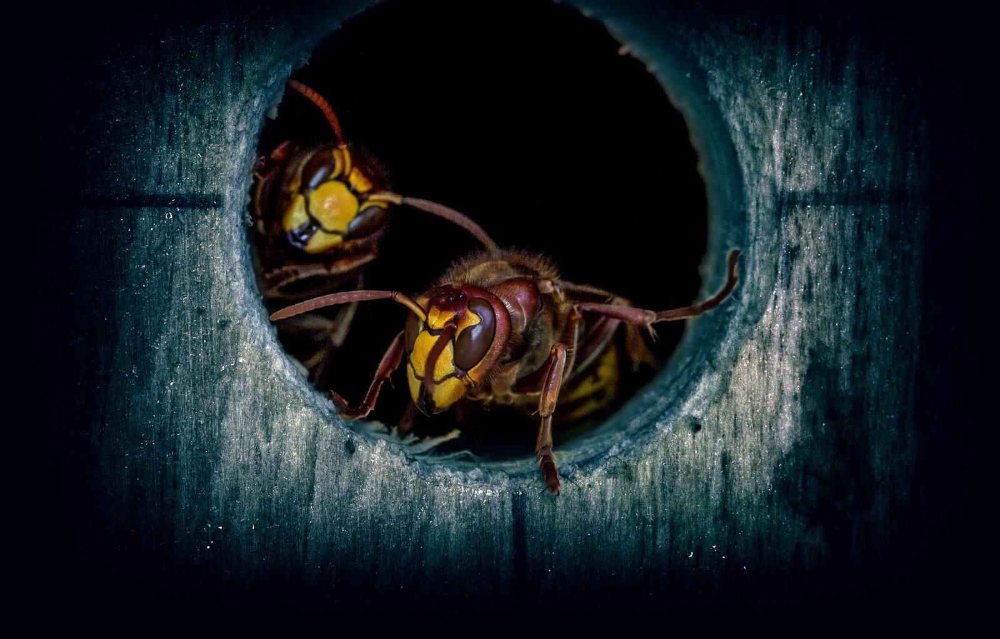
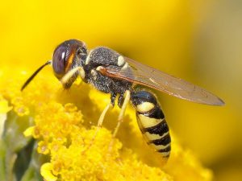
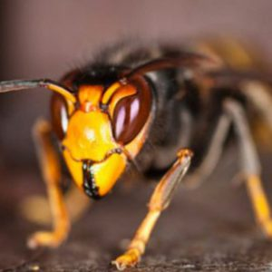
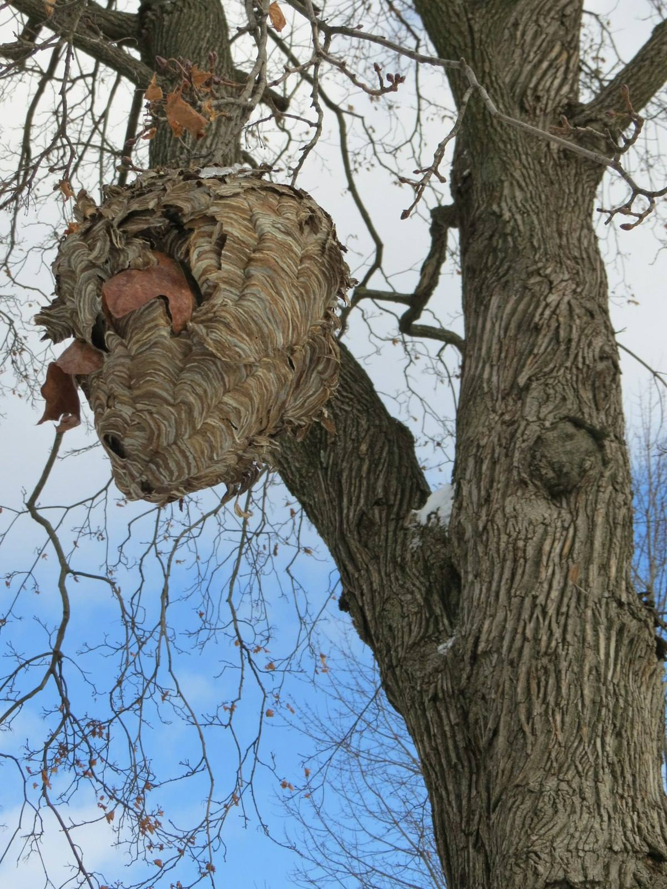
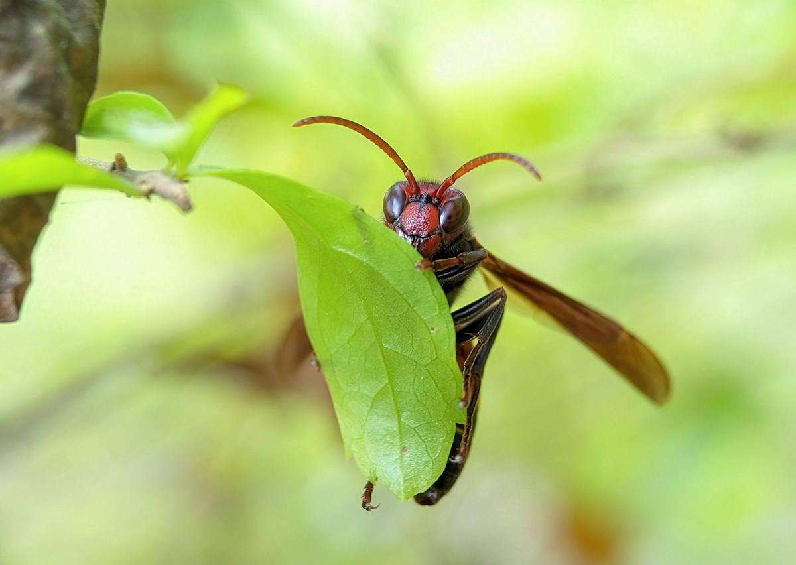

À Toulouse, en Haute-Garonne (31) et dans le Gers (32). Devis gratuit, traitements raisonnés et intervention garantie. Technicien agréé Certibiocide.

VespulaNids sous toiture, coffres de volets roulants, haies et au sol. Traitement professionnel adapté.

Vespa crabroNids nichés dans les charpentes, les combles et les troncs creux. Repérage et élimination.

Vespa velutinaEspèce invasive. Destruction des nids en hauteur recommandée par les autorités.
Nids sous toiture, dans les coffres de volets roulants, les haies ou au sol : nous éliminons tous les types de nids de guêpes en toute sécurité.
Les coffres sont un abri fréquent pour les nids de guêpes.
Tuiles, débords de toit et combles offrent chaleur et protection.
Nids dissimulés dans la végétation dense du jardin.
Certaines guêpes nichent dans le sol, le long des murets.
Impressionnant mais moins agressif, le frelon européen niche dans les charpentes, les combles et les troncs. Pour un maximum de sécurité, la destruction est souvent réalisée au crépuscule, quand la colonie est regroupée.

Espèce invasive aux nids sphériques installés en hauteur. Notre technicien intervient avec perche télescopique et matériel adapté, en toute sécurité. Tarif sur devis gratuit selon la hauteur et l'accès.
Guêpe, frelon européen ou frelon asiatique ? Identifiez le nuisible — ou envoyez-nous une photo par SMS.
Décrivez le problème. Une photo du nid accélère le diagnostic.
Identification de l'espèce et de l'accès au nid. Devis gratuit par téléphone.
Intervention programmée dans les meilleurs délais, souvent le jour même, 7J/7.
Le technicien sécurise la zone autour du nid avant toute manipulation.
Traitement raisonné adapté à l'espèce et à l'emplacement du nid.
Contrôle de l'efficacité du traitement. Intervention garantie.
7J/7, week-ends et jours fériés inclus, sur Toulouse et sa région.
Technicien certifié, produits agréés et traitements raisonnés.
Estimation transparente par téléphone. Tarif fixe, sans surprise.
Nous garantissons l'efficacité de notre traitement sur le nid traité.
Haute-Garonne (31) et Gers (32), de Toulouse à toute la métropole.
Des méthodes respectueuses, ciblées sur le nuisible et son nid.
Consultez les avis de nos clients sur Google ou partagez votre expérience après notre intervention. Votre retour nous aide à continuer un service de qualité.
communes desservies · ville sélectionnée
Plus de 130 communes autour de Toulouse (31) et dans le Gers (32). Cliquez sur une ville : si elle figure sur la carte, son épingle passe au vert.
Devis gratuit par téléphone. Tarif fixe, tout compris. Intervention garantie.
Les traitements « invasion de guêpes » (toiture / terrasse) et les nids de frelons asiatiques en grande hauteur font l'objet d'un devis gratuit personnalisé par téléphone.
Découvrez nos interventions en vidéo. De nouvelles vidéos arrivent très prochainement.
Tout ce qu'il faut savoir avant notre intervention.